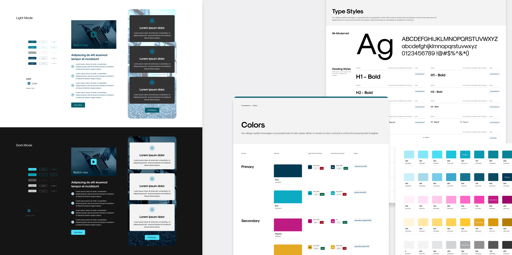
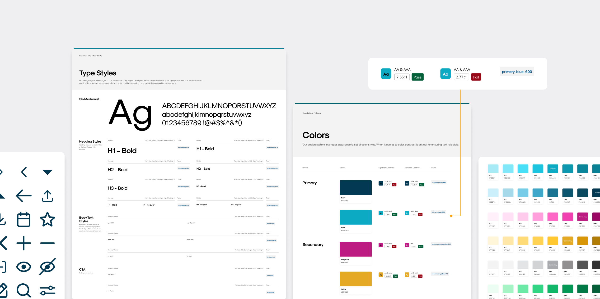
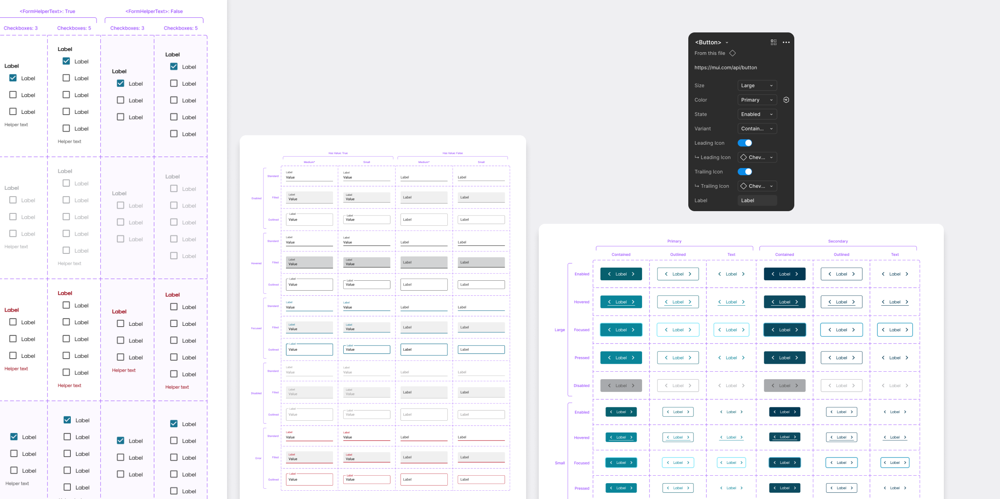
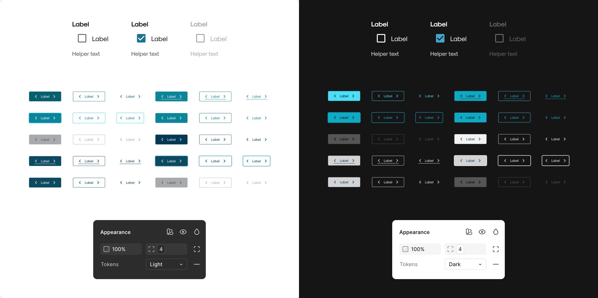
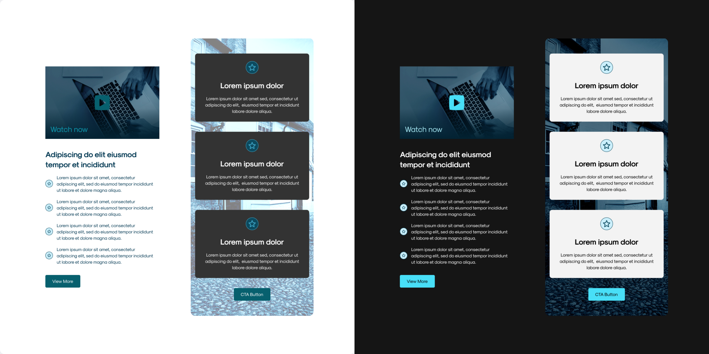

MVP Design System
Building a Token-Based, TwinCSS-Compatible Design System that Supports Light and Dark mode

My roles
Design System (System architecture, Token creation, Documentation, and Component design)
Timeline & Team
2 months start to finish collaborated with a global cross-functional team
Context
This project began with only a basic color guideline—there were no defined typography styles, spacing rules, or components. I inspected the existing website to extract visual styles, then created a tokenized MVP design system in Figma that supports light and dark modes and is compatible with Tailwind CSS for easier developer implementation.

Approach
I began by defining design tokens for colors and other visual primitives using Figma variables. These tokens were structured to align with Tailwind CSS naming and utility logic, making them easier to apply in code. With this foundation, I created core components, such as buttons and form fields, using the tokens to ensure consistency and scalability. Each component was designed to support both light and dark themes.

Light + Dark Mode
I created paired tokens for surface, text, border, and other elements in both light and dark contexts. Using Figma's variable mode switch, I designed components that could instantly adapt to either theme without duplicating work. This approach made it easy to maintain visual consistency and ensured the components were ready for seamless integration with Tailwind.

